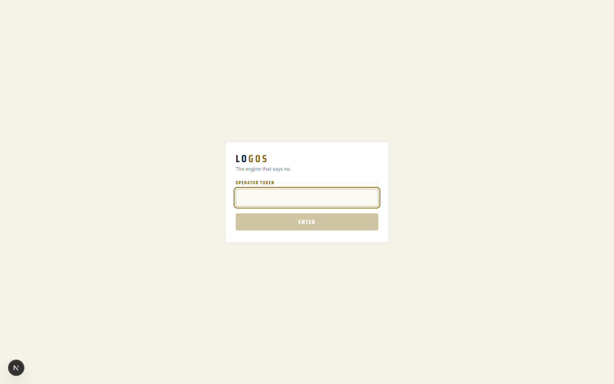

Where you are, and the next moves in order
Built 07:57 on 12 September 2026 from the progress board's own source. Green is done, gold is in progress, grey is not started, red is blocked.
Edited by hand at 11:40 on 12 September and again at 15:05 when you closed Stage 6, so this page is no longer a pure copy of the board. The board's own state still lives in tools/progress_board_iotas_storyboard.py.
KD Robot, Stage 6: DONE, six of six
| 6.0 | The storyboard, before any code | done | |
| 6.1 | The real gap, named precisely | done | |
| 6.2 | Two narrators: an instant one and a real one | done | |
| 6.3 | The voice: free, on-device, zero spend | done | |
| 6.4 | Wired into Talk: two replies, not one silence | done | |
| 6.5 | The proof screen, your own ears, laptop and phone | done |
Closed 12 September, by you. You spoke briefs on the laptop and on your phone over Tailscale, and heard the instant reply and the real answer both times, including a refusal that quoted your own words back instead of inventing a reason. On the phone the answer spoke in 5.5 seconds. Your words: "Heard it over phone".
It did not close clean, and that is why it was worth doing. Your test found four real defects no test of ours had caught: your engine put your own Hook Engine into your aunty's restaurant brief and then said build; the answer spoke twelve minutes late and then three times; the fact checker returned five violations that were all wrong; and that audit held your verdict for 213 seconds. All four fixed, tested and committed the same day.
The whole ladder
| 0 | Reclaim and stand alone | done | |
| 1 | Names, records, one honest commit | done | |
| 2 | ARCHITECTURE, the great transfer | done | |
| C | The Council, ten seats and a chair (ruling 33) | building | |
| R | Hybrid retrieval for the brain (ruled 2 Sep) | done | |
| 3 | The loops, all at once, with a supervisor | done | |
| 4a | LOGIC-B on Oracle, the main cloud (King's 10 Sep ruling reverses the 6 Sep rename) | building | |
| 4b | LOGIC-C on the friend's PC, the primary | building | |
| 5 | The colour law and the 2D one-line, live | done | |
| 6 | 4D, KD talking back | done | |
| 7 | 5D, KD Robot, beta | building | |
| 8 | 6D, the portal, other companies with consent | not started | |
| 9 | The Logos service for companies | not started | |
| T | Retrieval knows where it is standing | done | |
| A | The five King ruled by name | done | |
| P | The price tables, found by using them | done | |
| B | Closed off King's own desk | done | |
| SB | THE KD STORYBOARD, every iota (King's ruling, 10 Sep) | building |
The written storyboard, part by part
| S.0 | Where you are: how to read this | done | |
| S.1 | The three states: HW, SW, CW | done | |
| S.2 | Cloudware: what they become assembled | done | |
| S.3 | The equation: KNOWLEDGE to WISDOM to LOGOS to POWER | done | |
| S.4 | The two hearts: LOGIC-A and LOGIC-B | done | |
| S.5 | The harnesses: the tack, not the horse | done | |
| S.6 | The door ladder and the chain of command | done | |
| S.7 | The command centre: IDE, CLI, GUI | not started | |
| S.8 | WAT, and the completion loop that is not turning | not started | |
| S.9 | The engine and the LOGOI agents | not started | |
| S.10 | KD Robot and the universe, in three layers | not started | |
| S.11 | BMS and EPMS: how he knows it is healthy | not started | |
| S.12 | The money: enterprises, franchise, services | not started | |
| S.13 | The honest ledger: real, half built, zero | not started |
6.5, step by step, with what you will actually see
1Open the deck
On the laptop go to http://127.0.0.1:3200. You will see this door first. Type your operator token and press ENTER. I never type it.

2Check the world
Beside Talk, the list must read King David Agbidi, The Faceless Hook Engine. It now opens there by default, fixed last night.
3Press Talk and say the first brief
The Buka is a Nigerian restaurant in Dublin. They want more local customers finding them online.
4Listen for two replies
Within seconds: a spoken reply that says back what it understood and ends I am thinking it through properly now. Then the real verdict, a gold card reading build. Expect roughly 3 to 5 minutes, not the 5 to 7 this page said before: the speed fix on 12 September cut 2 minutes 34 seconds of reading off the first brief. Your second brief will not be faster, and I have not yet found what makes it slow.
5Wait for the card before the second brief
One full verdict at a time. Then press Talk again: Hook Engine, nineteen euro. No audience, no traffic, no email list and no distribution. Launch it and start selling this week. Expect not ready.
6Now the phone
Tailscale on, Safari (not the home screen app), https://desktop-gruls39.tail01147a.ts.net:8443. Sign in once. Check sound at /avatar, which looks like this.
7Tell me what you heard
Your words, not a tick box. I read every mission back from the engine's own log and close 6.5 on the record.
THE ENGINE'S OWN LOG, the newest rows (read only, from v0.sqlite3)
when world who what payload
2026-09-11 16:04:38 kd-faceless voice voice.reply {"model":"gemini-3.8-flash","tokens_in":99,"tokens_out":41,"milliseconds":3827}
2026-09-11 13:55:48 kd-faceless preverify station.finished "{\"station\":\"diagnose\",\"ok\":true}"
2026-09-11 13:55:48 kd-faceless diagnose_worker gateway.response {"mode":"local","billedTo":"operator","model":"qwen3:8b","inputTokens":3677,"outputThen, in this order
Stage 6 is closed
12 September, on your own ears, on both machines. Nothing here is waiting on you any more.
closed by you, not by a test
Open Stage 7 the way Stage 6 opened
Stage 7 has no steps written at all, it just says not begun. Stage 6 started with 6.0, its storyboard. So 7.0 is writing Stage 7's steps from your own 29 Aug words: the combination of it all, fully immersive, controllable via phone. You already own the base: AUREO, your approved Three.js city, 520 lines, 60fps on a real phone. EDEN is the live data behind it.
gate: I can write 7.0 while you sleep
Hermes
Not a setup job yet. Your own records say it is NOT installed and the install method is TBD, check the community, in two separate notes. So the task is: find the current method, install it, point it at Ollama where it costs nothing. It blocks nothing else.
gate: needs research first, not a command
Kiro
Runs on the physical WORK laptop, not this one. Your bootstrap has 8 steps but its Kiro recipe is an unverified draft adapted from the older Orcha guide, and step 1 is manager approval. Your own note also puts the Amazon contract behind a solicitor before the DCEO vertical. Rule that stands: your personal GitHub token never touches that laptop.
gate: manager, then solicitor, then the laptop